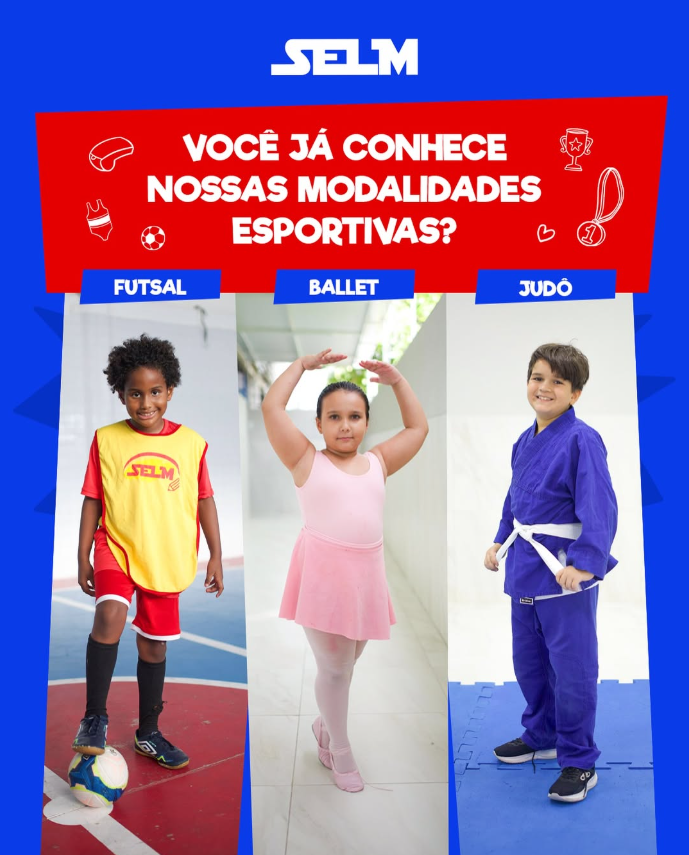

Inicio
Niveis de ensino
Infantil
Fundamental
Médio
.png)
Unidades
Instagram
.png)

Judô
O judô é uma das atividades oferecidas pela nossa escola, proporcionando aos alunos uma formação completa que vai além do esporte. Através da prática dessa arte marcial, trabalhamos não apenas a técnica e a força física, mas também valores essenciais como disciplina, respeito e autocontrole. Nossas aulas são conduzidas por profissionais qualificados, que ensinam desde os fundamentos básicos, como quedas e projeções, até técnicas mais avançadas, sempre respeitando o ritmo e a capacidade de cada aluno. O judô estimula a concentração, a coordenação motora e a resistência, além de desenvolver o raciocínio estratégico, pois cada movimento exige precisão e planejamento. Dentro do tatame, os alunos aprendem a importância da paciência, do respeito ao adversário e da persistência para superar desafios, tornando-se não apenas melhores atletas, mas também cidadãos mais preparados para a vida.
O sistema de graduação por faixas motiva os alunos a se dedicarem constantemente, estabelecendo metas e acompanhando sua evolução dentro do esporte. Periodicamente, realizamos exames de troca de faixa, onde os alunos demonstram seu aprendizado e recebem reconhecimento pelo esforço e dedicação. Também incentivamos a participação em competições internas e externas, proporcionando a experiência de testar habilidades em um ambiente desafiador, mas sempre dentro dos princípios da ética e do respeito. Mais do que um esporte, o judô é uma filosofia que acompanha os alunos dentro e fora da escola, ajudando-os a desenvolver autoconfiança, resiliência e autocontrole. Se você deseja fazer parte dessa jornada de aprendizado e superação, venha participar das nossas aulas de judô e descubra todos os benefícios dessa arte marcial.